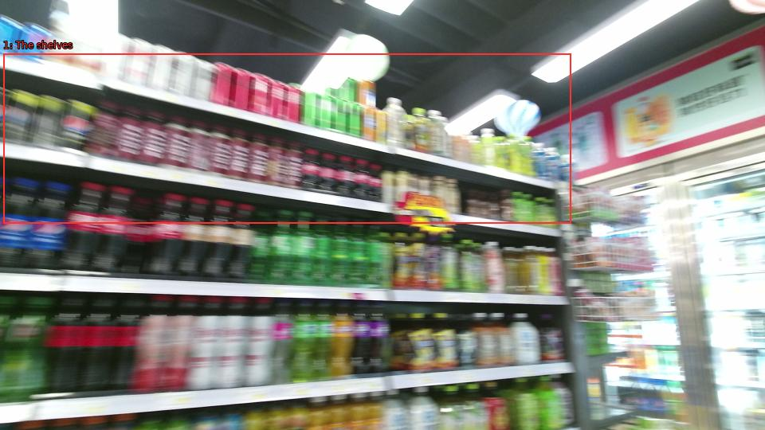

The image shows a supermarket aisle with multiple shelves stocked with various types of drinks. The shelves are arranged in a neat and orderly manner, with rows of bottles of different colors and sizes. The drinks appear to be soft drinks, such as soda, juice, and smoothies. The background is blurred, but it appears to be a grocery store with other products visible in the background. The image is taken from a low angle, looking up at the shelves.

Original · Caption raw · Grounding raw · Koordinate
Številke so lokalni ID regije. Dolge slikovne oznake so skrajšane; spodaj so celotne fraze. Napovedane regije se lahko prekrivajo ali opisujejo skupine.
| ID | Celotna fraza | bbox xyxy |
|---|---|---|
| 1 | The shelves | [4.319999694824219, 67.2300033569336, 716.6399536132812, 280.5299987792969] |